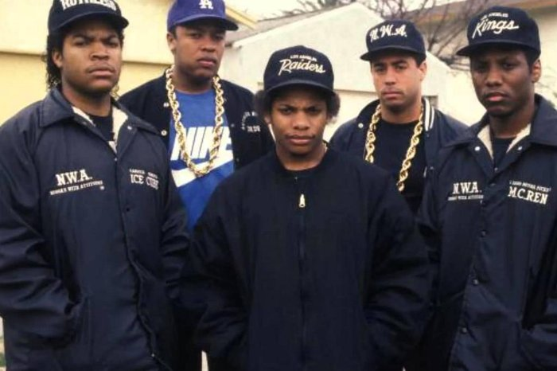
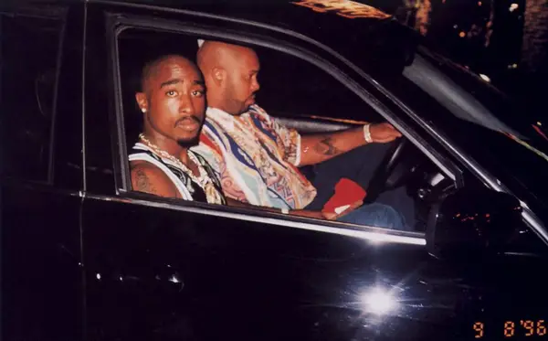
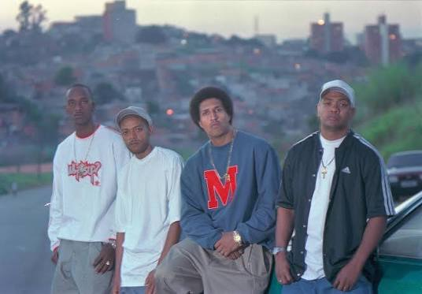
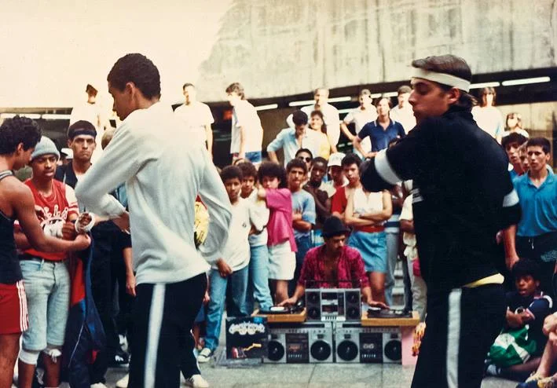
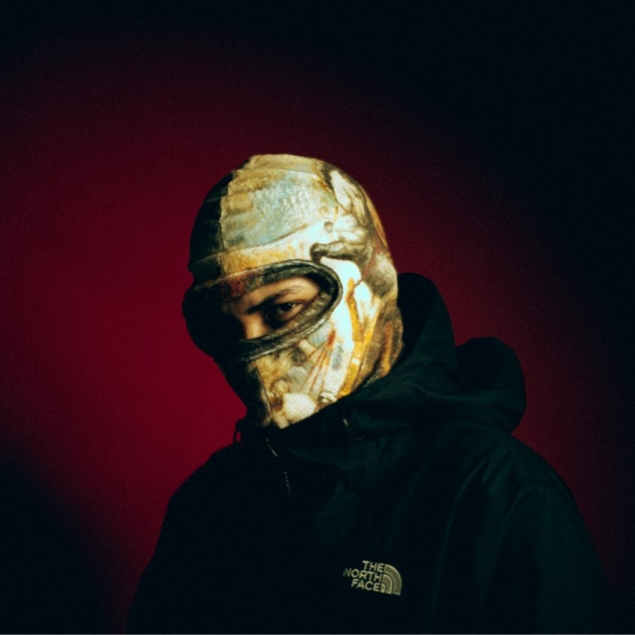
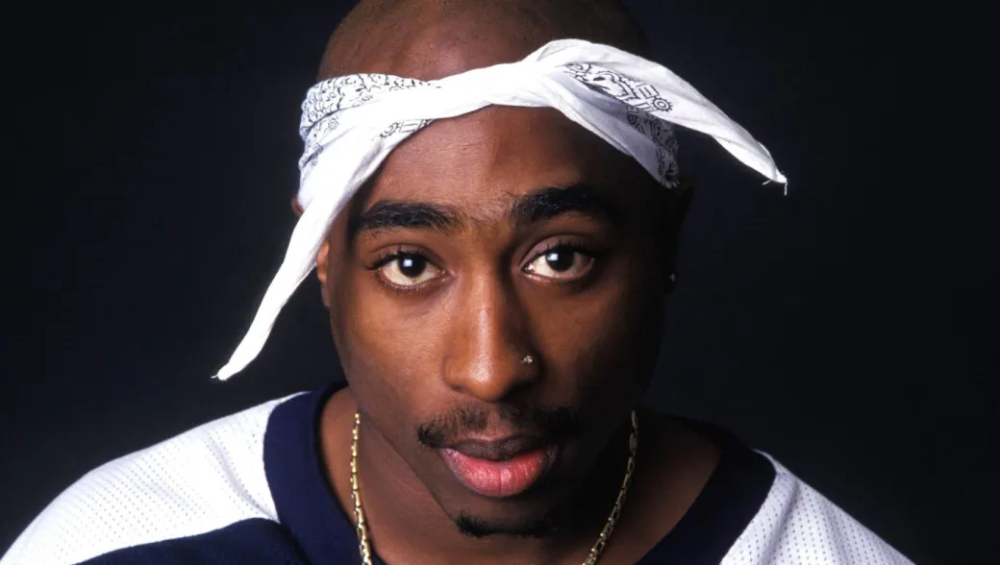
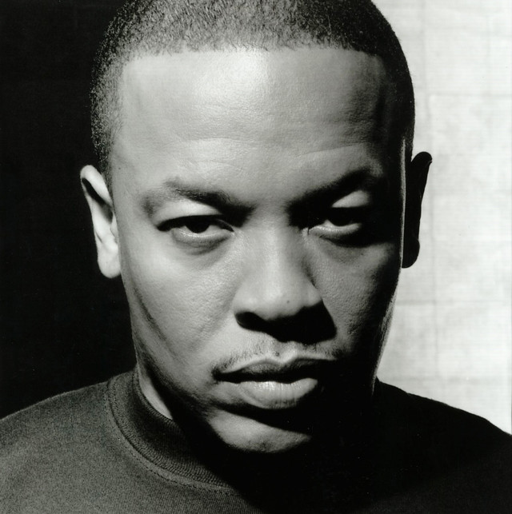

Registros
Galeria de Fotos
Separamos algumas fotos históricas do genero tanto nos EUA como no brasil.





O Hip-Hop nasceu na década de 1970 como um grito de expressão e resistência de jovens negros e latinos no bairro do Bronx, em Nova York.
O DJ Kool Herc organiza a lendária festa de rua na avenida Sedgwick, em Nova York. Ao usar dois toca-discos para isolar e estender o "break" instrumental das músicas para a galera dançar, ele cria a base mecânica e cultural do Hip-Hop.
O rap domina definitivamente a indústria musical e cultural do planeta. É o ano de lançamentos históricos como o álbum All Eyez on Me de Tupac Shakur e a consolidação do G-Funk de Dr. Dre, marcando o auge da produção lírica e da rivalidade que definiu a década.
O Hip-Hop está totalmente consolidado como a força que dita as regras da cultura pop, da moda e do streaming mundial. O cenário atual é marcado pela mistura de subgêneros (como o Trap e o Drill) e pela consagração de ícones que transformaram o ritmo de rua em um império bilionário.
O Hip-Hop chegou no Brasil na decada de 80, no centro de São Paulo. Ele começou como uma admiração pelas danças e batidas estadunidenses e rapidamente virou ferramenta de crônica social.
OInspirados por filmes de dança americanos, b-boys, DJs e MCs começam a se reunir na estação de metrô São Bento, em São Paulo. O local se torna o berço histórico e o ponto de articulação que espalhou a cultura pelo país.
Os Racionais MC's lançam o álbum que revolucionou a música e a sociologia brasileira. O disco colocou a realidade nua e crua das quebradas no centro do debate nacional, provando que o rap de mensagem tinha força para mover multidões de forma totalmente independente.
O Hip-Hop brasileiro vive sua era de maior alcance comercial, diversidade e impacto na moda. Do lirismo clássico ao domínio absoluto do Trap e do Grime nos grandes festivais e plataformas de streaming, o gênero se consolidou definitivamente como a música pop da juventude urbana do país..
O hip-hop evoluiu e se modificou ao longo do tempo, gerando milhares de estilos e ramificações que não podem mais ser ignoradas. No trecho seguinte estão 6 dos maiores subgeneros junto com a imagem de um artista que passa a imagem desses estilos.
Surgiu no sul dos EUA, no inicio dos anos 2000, caracterizado pelos beats pesados, hi-hats acelerados, sub-graves intensos e letras sobre a vida nas ruas.
Na imagem está Future, rapper e produtor estadunidense

Surgiu nos anos 90 caracterizado pelas suas batidas ritmas, samples de jazz e soul, letras focadas em narrativas urbanas e um ritmo mais lento. O termo "boombap" vem da onomatopeia do som do bumbo (boom) e caixa (bap).
na imagem está Pumapjl, rapper brasileiro.
Originado em Chicago no inicio da decada de 2010, é conhecido pelas suas batidas "sombrias", graves pesados e letras cruas. O genero ganhou bastante popularidade na região do Reino Unido.
Na imagem está Central Cee, cantor e rapper britanico.

É o que vem na mente quando se pensa em rap. Surgiu em meados de 1980 e narra de forma nua e crua a realidade das ruas, abordando temas como violencia, desigualdade e conflitos.
Na imagem está Tupac, rapper estadunidense conhecido como um dos maiores de todos os tempos.

Surgiu no inicio dos anos 90, com forte presença de samples de bandas de funk dos anos 70, alem de melodias lentas, graves profundos e sintetizadores agudos, com atmosfera suave e hipnotica.
na imagem está Dr. dre, rapper estadunidense.
Surgiu nos anos 80, nos Estados Unidos. Não é caracterizado por uma sonoridade exata mas por priorizar letras que relatam as desigualdades economicas, de genero e raça, expondo problemas e inspirando mudanças sociais.
Na imagem está Emicida, cantor e rapper brasileiro.
Fatos interessantes sobre o Hip-Hop e sua história
O termo "Hip-Hop" foi criado por Keith "Cowboy" Wiggins, que estava tirando sarro de um amigo que tinha acabado de se alistar no exército, imitando o ritmo da marcha dos soldados dizendo "hip/hop/hip/hop". Mais tarde, o lendário Afrika Bambaataa usou o termo para batizar o movimento cultural completo.
A NASA transmitiu a música "The Rain (Supa Dupa Fly)", da icônica Missy Elliott, em direção ao planeta Vênus. Com isso, Missy Elliott se tornou a primeira artista de Hip-Hop a ter sua obra enviada para o espaço profundo.
O ponto de encontro histórico do hip-hop em São Paulo (a estação de metrô São Bento nos anos 1980) explodiu graças ao filme americano Beat Street (A Loucura do Ritmo), lançado em 1984.
Separamos algumas fotos históricas do genero tanto nos EUA como no brasil.



